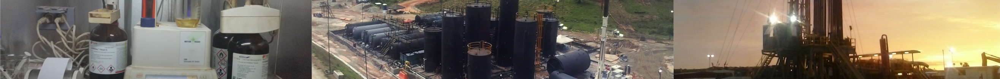

Ingeniero químico con amplios conocimientos en el sector de medio ambiente e hidrocarburos, con enfoque a normatividad y tramites legales. Soy una persona analítica, responsable, adaptable a los requerimientos de los proyectos ejecutados, orientada a logros y con un gran compromiso en el aspecto laboral y profesional.
Experiencias Profesionales
Lider de Área
Esta experiencia me dió la oportunidad de adquirir herramientas para un manejo efectivo del personal a cargo, la solución de problemas bajo presión, manejo y respuesta a solicitudes multiples de clientes y la articulación de procesos para la entrega de servicios satisfactorios.
Zona rural municipio de Cajamarca

Profesional Ambiental
Dicha experiencia me permitió adquirir habilidades de adaptabilidad, afianzamiento de conocimientos en relación a calidad de recursos hídricos superficiales y subterráneos, capacidad de análisis de bases de datos extensas para más 50 fuentes hídricas diferentes, implementación de criterios QA/QC para la aceptación o descarte de información y el desarrollo de bases de datos especializadas en el área.
Laboratorísta de Campo
Esta experiencia me permitió articular mis conocimientos teóricos en el área de hidrocarburos con el proceso productivo estableciendo puntos críticos en la operación y determinando posibles soluciones a las problemáticas presentadas a nivel operativo, para garantizar un producto de buena calidad.
Pasantía (Directos Dpto. Gestión Ambiental)
Mediante esta experiencia adquirí bases sólidas en relación al manejo de diversos temas ambientales, la adquisición de permisos, el manejo y atención a autoridades distritales, la solución de problemáticas críticas y el trabajo autónomo.
Formación Académica
Formación Formal
Ingeniería Química
Universidad Nacional de Colombia
2008 - 2014
Bachillerato Técnico en Medio Ambiente
Colegio Francisco Julían Olaya
2006 - 2007
Formación No Formal
Aditivos: Análisis y Control en la Industria Alimentaria
Servicio Nacional de Aprendizaje - SENA
2017
Auditor Interno en Sistemas de Gestión ISO 9001/15, ISO 14000/15 y OHSAS 18000/08
SGS Academy - SGS Colombia
2016
Salud Ocupacional: Salud y Seguridad en el Trabajo
Servicio Nacional de Aprendizaje - SENA
2014
Servicios Profesionales
Área Ambiental
° Elaboración de informes ambientales para las matrices de calidad de agua (potable, residual, superficiales y subterráneas), calidad de aire, emisión de ruido y calidad de suelos y sedimentos; con estandares nacionales e internacionales.
° Elaboración de estudios de impacto ambiental, planes de manejo ambiental y diagnóstico de alternativas de acuerdo con las normativas nacionales y los requerimientos de las autoridades ambientales.
° Efectuar trámites ambientales para la adquisición de permisos de emisiones, vertimientos y manejo de residuos peligrosos ante autoridades distritales y regionales.

Área Hidrocarburos
° Análisis de calidad para muestras de crudo y agua de formación bajo estandares ASTM (salinidad, BSW por Karl Fisher y por decantación, determinación de cloruros, determinación de grado API, determinación de Solidos Suspendidos)
° Calibración de equipos e instrumentos para el análisis fisicoquímicos me muestras de crudo y aguas de formación e inyección.
° Interpretación de los resultados de análisis fisicoquímicos para la detección de fallas en el proceso de tratamiento así como establecer mejoras al proceso productivo.

Ingeniería General
° Elaboración de informes ambientales para las matrices de calidad de agua (potable, residual, superficiales y subterráneas), calidad de aire, emisión de ruido y calidad de suelos y sedimentos; con estandares nacionales e internacionales.
° Elaboración de estudios de impacto ambiental, planes de manejo ambiental y diagnóstico de alternativas de acuerdo con las normativas nacionales y los requerimientos de las autoridades ambientales.
° Efectuar trámites ambientales para la adquisición de permisos de emisiones, vertimientos y manejo de residuos peligrosos ante autoridades distritales y regionales.
<
-->